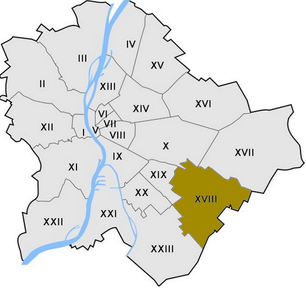

| Magamról |
|||
|---|---|---|---|
2003 október 3-án születtem Budapesten.
2005-ben és 2007-ben megszültett ez első két húgom, majd 2017-ben megszületett a harmadik is!
Sokáig egy elég kicsi házban laktunk a 18. kerületben majd elköltöztünk a jelenlegi házunkba. (Lakóhelyem)
A Vörösmarty Mihály Ének-zenei Nyelvi Álltalános Iskolába jártam egészen nyolcadik osztályig miután a Pataky-ba jöttem!
Második osztályos koromben elkezdtem focizni, hiszen nagyon szerettem a sportot és olyan akartam lenni mint a legnagyobb világsztárok! Ezt azonban hetedik osztályban abba kellett hadjam, mert a térdem beteg lett. (Szerencsére később meggyógyult)
A kihagyás miatt elgyengültem és felszedtem pár kilót. Mára azonban egészséges vagyok és próválok minél többet sportolni és erősödni.
Idő közben elég sokat kezdtem játszani a FIFA-nevű játékkal amit mára próbálok magas szinten játszani és minél jobb lenni benne. (Hobbim)
Emellett elkezdett érdekelni az informatika, azon belül is inkább a programozás és a játékfejlesztés. Ezért is jelentkeztem a Pataky-ba ugyanis úgy vélem hogy itt remek alapozást kapok és sokat tanulhatok!
|  |
|---|